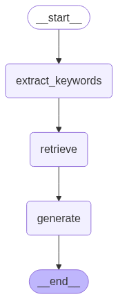

Developments in LLM/RAG
Agenda
- LLM Foundations
- RAG (Retrieval-Augmented Generation)
- LLM Agents
- LLM Evals
LLM Foundations
What Is an LLM?
- A large language model predicts the next token given some initial tokens.
- Training objective: minimize next-token prediction error across massive text corpora.
LLM neural networks
Text → Tokens → Token IDs → Embeddings → Transformer
LLM Arhitecture

Source: Geeks for Geeks
Tokenization
- Models do not read words directly; they read tokens.
- A token can be a full word, subword, punctuation mark, or whitespace chunk.
- Pricing, latency, and context limits are token-based.
- 1 token ≈ 0.75 words or 1.33 \(\times\) words
- $2.50 / 1M tokens | CI: $0.25 / 1M tokens | O: $15.00 / 1M tokens
- GPT-2’s vocabulary has 50,257 unique tokens. 1
Tokenization
- Same sentence can produce different token counts across tokenizers.
Tokenization
Open AI tokenizer
https://platform.openai.com/tokenizer
Embedding Layers
- Map discrete token IDs to continuous vector space.
- Capture semantic relationships and contextual nuances.

source: CauserWriter
Semantic: relating to meaning in language or logic.
Embedding Layers
Great Video from 3blue1brown
🤔 Question
Can we use this for classification?
Transformers
Example:
“I deposited money at the _ _ _ _”
“I sat on the river _ _ _ _”
- Text-generative Transformer models operate on the principle of next-token prediction: given a text prompt from the user, what is the most probable next token (a word or part of a word) that will follow this input
- Transformes allows the LLM to understand understand things like based on ALL the tokens I have seen, what should each token mean in this specific context.
Transformers
When I predict the next token, how much attention should the model pay to all the preceding tokens?
Attention blocks in tranformer models allow all tokens to talk to each other.
Within each Transformer block, the multi-head self-attention layer is what allows tokens to communicate with each other.
Without it, each token would be processed in isolation. The FFN layers that follow operate per-token, so attention is the only mechanism for inter-token information flow.
Transformers
Source: Cho et al. (2024). Transformer Explainer. IEEE VIS. — Click here
Transformers
Attention Is All You Need
Original Paper
Annotated Implementation
The main take-aways
LLM’s are just recursively predicting the next token.
Preceeding tokens dictate the output proba. By adding “OH,” probabbilty increases by double.
Temp changes the probability distribution of the predicted tokens. Higher temp = more randomness.
ChatGPT API
temperature=0: most deterministic decoding (lowest randomness).max_tokens: hard cap on generated output length.reasoning_effort: controls how much internal reasoning budget is used.- Tradeoff: higher quality often means more latency and cost.
State of Open-Source LLMs
- Strong families: Llama, Qwen, Mistral, DeepSeek, and domain-specific variants.
- Practical benefits: self-hosting, lower marginal cost, data residency control.
- Typical constraints: hardware needs, ops complexity, eval/finetune overhead.
- Common pattern: open-source for retrieval/structured steps, frontier API for hardest reasoning.
RAG
Grounding to the Truth
We know that Base LLM knowledge – especially smaller models – can be stale or incomplete. Demonstrated by the Miami Example.
We also know that preceeding tokens play a pivital role. Prompting and context becomes important. Think back to the “Miami(OH),” example.
I also assume that you know that giving your notes to an LLM as context and asking for a study guide is better than just asking for a study guide on a certain topic.
🤔 Question
Is there a way, everytime we ask LLM a question, it injects the right context into the prompt?
Retrieval Patterns: SQL & Vector
- SQL retrieval for exact, structured data:
- transactional facts
- filtered records
- Vector retrieval for semantic relevance:
- semantic matching and fuzzy mathing
- unstructured text
Can you combine both in the same app?
Minimal RAG Flow (Pseudo-code)
Vector Stores
- A vector store indexes embedding vectors alongside metadata for fast nearest-neighbor lookup.
- At query time, your question is embedded into the same vector space, and the store returns the closest matching chunks.
- Pre-filters (date, source, department) narrow the search space before similarity ranking runs.
- Chunk size, overlap, and reranking strategy directly affect recall and precision — these are tunable knobs.
- We will be using FAISS in our demo today. 1
- Other popular options include Pinecone, MongoDB, Chromas
Chunking Strategies
- The way you split documents into chunks can make or break retrieval quality.
- For example, our museum data, each object is a point in the vector store. But if we are working with long documents, we might want to chunk them into sections or paragraphs.
- Overlap is important to preserve context across chunk boundaries. A common heuristic is 200-300 tokens of overlap, but this depends on your data and retrieval needs.
LangChain and LangGraph
- LangChain provides modular abstractions — prompts, retrievers, tools, and chains — so you can swap components without rewriting glue code.
- LangGraph extends this with stateful, graph-based workflows: define nodes, edges, and control flow for multi-step agentic pipelines.
- Rule of thumb: if your task is a single retrieval → generate pass, LangChain alone is fine. If you need branching, retries, or loops, reach for LangGraph.
LangGraph: Stateful Agent Graphs
- LangGraph models workflows as directed graphs where a shared state object flows through each step.
- Each node is a plain Python function: it reads from state, does work (LLM call, retrieval, tool use), and returns the keys it wants to update.
- Edges wire nodes together — fixed, conditional, or looping — giving you explicit control over execution order.
- This makes multi-step tasks debuggable and reproducible: you can inspect state at every node boundary.
builder = StateGraph(State)
# Nodes
builder.add_node("retrieve", retrieve)
builder.add_node("generate", generate)
builder.add_node("extract_keywords", extract_keywords)
# Edges
builder.add_edge(START, "extract_keywords")
builder.add_edge("extract_keywords", "retrieve")
builder.add_edge("retrieve", "generate")
builder.add_edge("generate", END)
# Compile & view
graph = builder.compile()
display(Image(graph.get_graph().draw_mermaid_png()))
State in LangGraph
- State is a
TypedDict— a typed Python dict that every node in the graph can read and write to. - Nodes return a partial dict with only the keys they want to update; LangGraph merges it back automatically.
- Reducers control merge behavior per key. The default is last-write-wins, but
add_messagesappends instead — useful for building up a conversation history.
from typing import TypedDict, Annotated, List
from langchain_core.messages import AnyMessage
from langgraph.graph.message import add_messages
class State(TypedDict):
messages: Annotated[list[AnyMessage], add_messages] # appends each turn
question: str # overwritten each call
documents: List[str]
generation: strLangGraph: Nodes and Edges
Nodes
- Any callable with signature
fn(state) -> dict - Return only the keys you want to update — everything else stays untouched
- Can call LLMs, retrievers, tools, APIs, or even nested sub-graphs
Edges
- Fixed:
add_edge(a, b)— always routes a → b - Conditional:
add_conditional_edges(a, router_fn)— routes dynamically based on state values STARTandENDare built-in sentinels that mark entry and exit points
RAG in Practice: Art Museum Search
- Curators had to write exact SQL queries to search the collection — but records were often incomplete, inconsistently tagged or missing metadata entirely.
- Exact-match SQL fails when the data is messy. A search for “black and white portrait photography” returns nothing if the record only says “gelatin silver print, 1940.”
- Vector Embeddings capture semantic similarity, so the retriever can surface relevant records
- The goal: replace rigid SQL lookup with natural language retrieval.1
Visualizing the Vector Store
NotebookLM Is a RAG App
- You provide docs.
- It indexes and retrieves relevant chunks.
- It answers with source-grounded context.
- This is RAG behavior, wrapped in a consumer-friendly interface.
LLM Agents
Agency
- an agent is an LLM that can autonomously take actions in a loop (tool use, code execution, web browsing), plan multi-step tasks, and course-correct based on feedback
- Agentic behavior is useful when tasks require multi-step decisions.
Simple Agent: SQL Tooling
- Pattern: user question -> intent parsing -> SQL generation -> execution -> final answer.
- Risk: SQL injection, unsafe queries, and accidental data exposure.
- Controls:
- allowlisted tables/columns
- parameterized queries
- read-only DB roles
- query validators before execution
MCP (Model Context Protocol)
- MCP standardizes how models discover and use external tools/context.
- Think of it as a common interface between model runtimes and tool servers.
- Before USB C and Thunderbolt, every device had its own weird plug. MCP is the USB C of model-tool integration.
- That’s what AI tool integration was like before MCP — every tool (Slack, Google Drive, Notion) needed its own custom integration code.
MCP Example
# MCP Server: expose a tool
@server.list_tools()
async def list_tools():
return [Tool(name="get_weather", inputSchema={...})]
@server.call_tool()
async def call_tool(name, arguments):
return get_weather(arguments["city"])
# MCP Client: discover and use it
tools = await session.list_tools() # "What can you do?"
result = await session.call_tool( # "Do this thing"
"get_weather", {"city": "Cincinnati"}
)Auto Research — Recursive Agent Example
- The core idea: give an AI agent a small but real LLM training setup and let it experiment autonomously overnight. It modifies the code, trains for 5 minutes, checks if the result improved.
- I forked this repo and ran it for our 591 project. The agent ran 20 experiments overnight and 2 saw small improvements in the target metric. 1
LLM Evals
What Is Right or Wrong?
- Define task-specific rubrics before testing.
- Separate objective checks (exact match, schema validity) from subjective checks (tone, clarity).
- Require evidence/citations for factual outputs where possible.
- Without a rubric, you’re grading with vibes.
Deterministic vs. Non-Deterministic Questions
- Deterministic: one correct answer. “How many paintings?” → 644. Gradeable with exact match.
- Non-deterministic: many valid answers. “Describe the African art.” Requires judgment.
- Most real-world RAG questions are non-deterministic — this is what makes LLM evals hard.
- Your golden set should include both types so you know where your system is strong and where it’s fuzzy.
| Type | Example | Grading |
|---|---|---|
| Deterministic | “How many paintings?” | Exact match / simple comparison |
| Non-deterministic | “Describe the African art” | LLM-as-judge or human review |
Randomness and Determinacy
- LLM outputs vary due to sampling and model uncertainty.
temperature=0improves repeatability but does not guarantee identical output.- Even the same deterministic question can get different wording across runs.
- This is why LLM evals require repeated runs and distributions, not single samples.
Accuracy, Latency, Cost
- Quality alone is not enough; track all three.
- Accuracy: does the model answer correctly?
- Latency: fast enough for the user experience?
- Cost: sustainable per request and at scale?
LLM as a Judge
- Use a strong model to score outputs against a rubric.
- LLM’s are really good at spotting incosistencies between 2 given texts.
- Two criteria we’ll use:
- Helpfulness: Is the answer relevant and concise?
- Correctness: Does it match the gold answer factually? This is more important.
- Watch for judge bias and rubric leakage.
- There has been instances if the LLM knows it is being graded, it will try to cheat on the test or won’t take it seriously. 1
Golden Set (How We did it for the research project)
- We had a team of 8 students, professors and phd candidates manually curate a set of 100 questions related to machinery, like a CNC lathe or Mill.
- Our questions were non-determinitic only.
- Each question was sent to a subject matter expert (SME) for revision. We had a safety consultant review all the questions.
Continuous Evals
- Notice the like/dislike buttons on ChatGPT responses? Those are user feedback signals that feed into OpenAI’s eval system.
- Also i’m sure you notice the A/B tests now too
- This is a good way to understand where the Agent failed and how to improve it.
- For example, if users consistently dislike responses to a certain question, that signals a weakness in the retrieval or generation for that query type. You can then add more examples of that question type to your eval set and iterate on improving it.
Ryan Singh · Developments in LLM/RAG